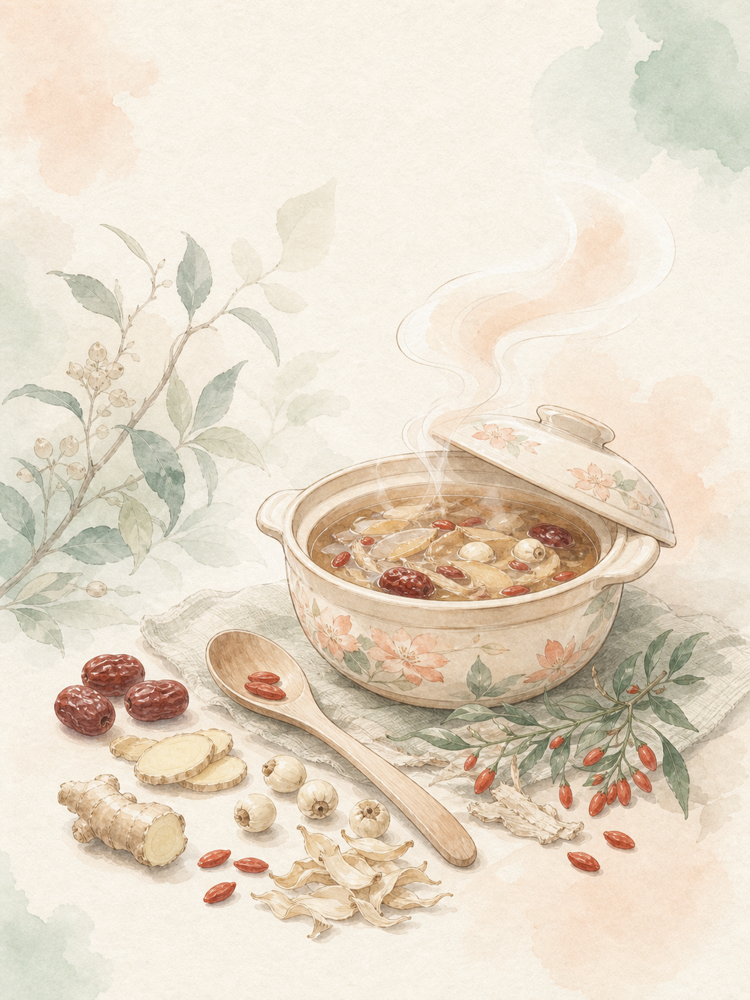

來源可追
食材保留官方品名、基原與使用部位；公開前逐項複查。
FOOD-GRADE HANFANG KITCHEN
從 20 種食品級漢方食材與 20 道家常食譜開始。拍照只是候選、食譜都有依據，AI 陪你一步一步煮完。

不是藥方，是一份
能好好完成的家常料理。
只談料理，不做診斷。 推薦只根據食材、口味、時間與過敏原；有醫囑飲食限制時，請以專業意見為準。
我們怎麼守住界線 →START WITH YOUR PANTRY
先選食材，再告訴我們時間與要避開的過敏原。試玩版已放入「枸杞＋紅棗」作為範例。
TODAY'S KITCHEN NOTES
依照你已選的 2 項食材，先找最接近的料理。
COOK WITH CONFIDENCE
推薦不是讓模型自由發明。系統先從既有食譜排除過敏原與時間不合的選項，AI 只負責解釋與逐步陪煮。
過敏原、時間與缺少主要食材。
只從 20 道既有食譜找最接近的三道。
按鍵說話、看進度，不臨場變更原料份量。
NEARBY, MAYBE IN STOCK
目前是示範地點；不讀取即時庫存。出發前請先打電話或向店家確認品項與食品標示。
TRUST BY DESIGN
食材保留官方品名、基原與使用部位；公開前逐項複查。
拍照只給候選，低信心回到手動選擇，不猜未知物。
不回答疾病、孕期、藥物相容性或體質處置。